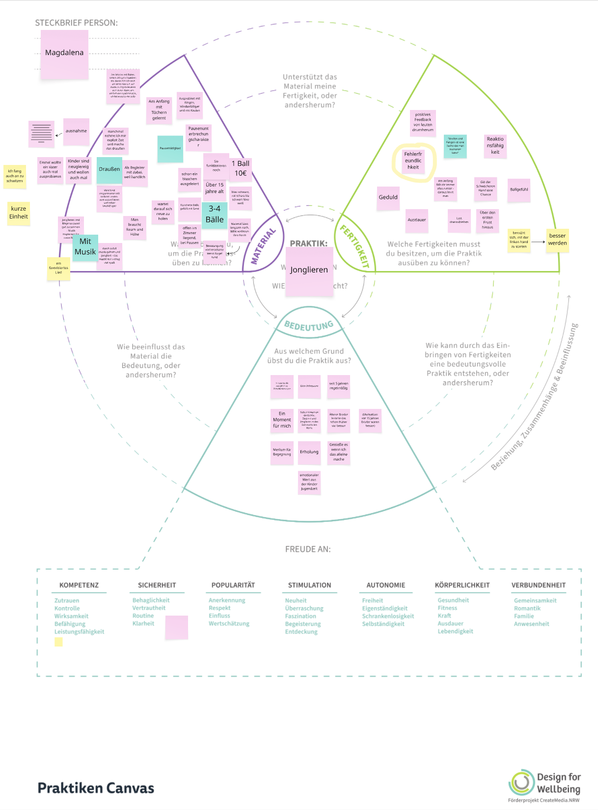

01 Insight & Goal
To take a break from screen time, the happy user uses juggling to create little pockets of calm in their daily life. They also associate the activity with childhood memories. They have been using the balls for decades, and they look the part by now. But they give her a sense of security and serve as everyday companions, both at home and sometimes outdoors. I gathered this information (and also the fact that the fundamental need underlying this activity is security, accompanied by routine, familiarity and comfort) through a semi-structured interview, using the Positive Practice Canvas to record the details.
